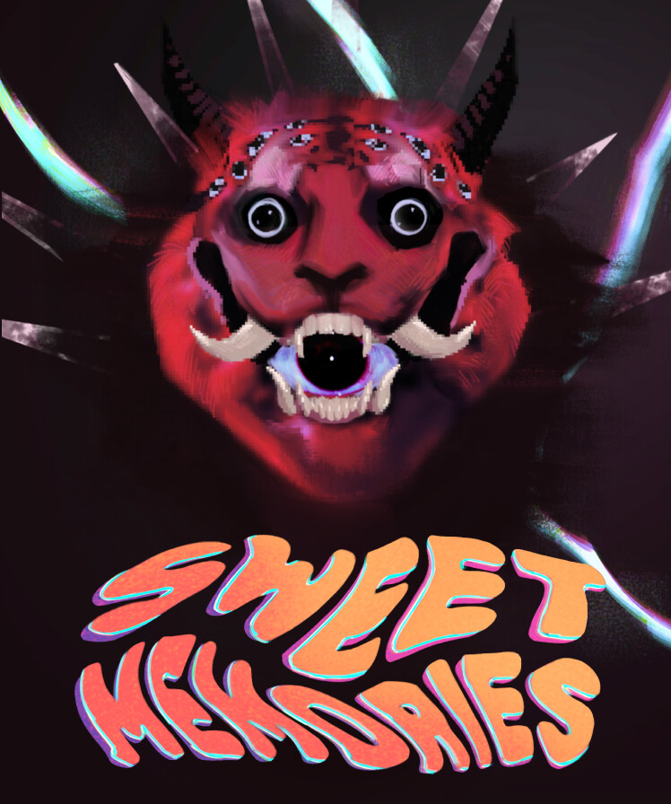

DOSSIER Nº 01

PIÈCE JOINTESweet Memories (jeu)
EN COURSRÔLE — Narrative & Game Design / Writing / Programming / Project Manager / Director
Sweet Memories est le premier jeu de mon studio, Empty Twins, disponible sur Steam.
Page SteamAnnées de création : 2026
Ren'Py // Ren'Py script language
> ACCÉDER AU DOSSIER COMPLET